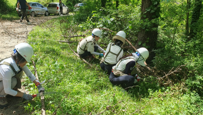
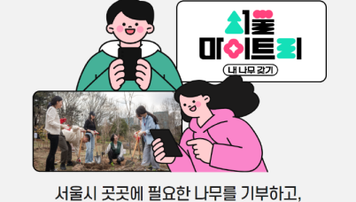
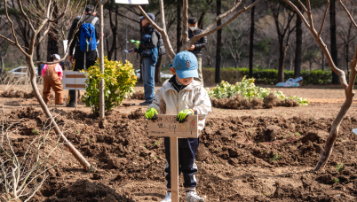

기념하고 싶은 날! 서울 곳곳에나무 한 그루 심어보는 건 어떠세요?
도시 속 나무심기를 위한#같이가치 #매달기부
생명의숲과나무 할아버지 박상진교수
생명의숲 시민 활동 플랫폼 '숲친'
생명의 숲은 기후위기시대 나무를 잘 심고, 잘 가꾸며 건강한 숲, 지속가능한 사회를 만들어 갑니다.
생명의숲은 시민의 힘으로 나무를 심고 숲을 가꾸고 보전하며, 숲의 공공성을 높여 누구나 숲의 가치를 누리는건강한 사회를 만들어가는 시민단체입니다.
생명의숲에서 시민과 함께 나무를 심고 숲을 가꾸고 보전하는 다양한 활동이야기
생명의숲은 지난 봄부터 "Make Us Green in Forest - FOREST CREW" 캠페인을 전국에서 실행하고 있습니다. 이 캠페인은 카카오메이커스의 후원을 통해 강원영동, 경북, 부산, 대전충남, 울산에서 활발히 진행되고 있습니다. 이 글을 통해 캠페인의 시작과 그동안의 성과, 그리고 앞으로의 계획을 나누고자 합니다.

서울마이트리, 온수공원 숲조성, 숲이 있는 운동장까지 생명의숲 도시숲 활동에 공감한 기업 17곳을 비롯해, 서울 곳곳에 나무를 기부하는 '서울마이트리'를 통해 1,087명의 시민이 생명의숲 도시숲 조성활동에 기부해주셨습니다.

메마른 겨울이 지나고 초록 싹이 슬슬 보이는 4월. 흩날리는 벚꽃잎 속에서 어김없이 올해 식목일에도 생명의 숲은 시민분들과 함께 나무를 심었습니다. 이번 나무심기는 신입 활동가로 설레고도 긴장되는 첫 행사였습니다. 혹시나 잘못 안내하면 어떡하나 이런저런 생각이 많았는데, 걱정이 무색하게 다들 열심히 안내를 듣고 꼼꼼히 심는 모습에 고민은 싹 사라졌습니다.
